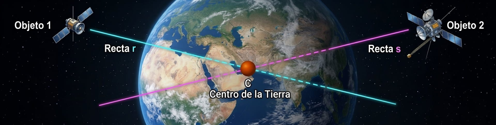

Ecuación implícita de la recta
Si de una recta tenemos un punto \(P=(p_1,p_2,p_3)\) y un vector director \(\vec{v}=(v_1,v_2,v_3)\) entonces conocemos la ecuación continua de la recta
\[r \equiv \dfrac{x-p_1}{v_1} = \dfrac{y-p_2}{v_2} = \dfrac{z-p_3}{v_3}\]
A partir de esta ecuación, dado que tenemos dos igualdades, podemos expresar la recta de la siguiente forma:
\[r \equiv \begin{cases} \dfrac{x-p_1}{v_1} = \dfrac{y-p_2}{v_2} \\[2ex] \dfrac{x-p_1}{v_1} = \dfrac{z-p_3}{v_3} \end{cases} \implies r \equiv \begin{cases} v_2(x-p_1)=v_1(y-p_2) \\ v_3(x-p_1)=v_1(z-p_3) \end{cases} \implies r \equiv \begin{cases} v_2x-v_1y=v_2p_1-v_1p_2 \\ v_3x-v_1z=v_3p_1-v_1p_3 \end{cases}\]
Por lo que la ecuación de la recta la podemos expresar de la forma
\[\implies r \equiv \begin{cases} Ax+By=C \\ Dx+Ez=F \end{cases}\]
donde \(A, B, C, D, E\) y \(F\) son números. Pero sabemos que en un sistema de ecuaciones podemos sustituir cada fila por una combinación lineal de las que componen el sistema, de esta forma, la ecuación de una recta va a poder venir dada por la forma:
\[r \equiv \begin{cases} Ax+By+Cz+D=0 \\ Kx+Ly+Mz+H=0 \end{cases}\]
donde \(A, B, C, D, K, L, M\) y \(H\) son números.
La expresión anterior recibe el nombre de ecuación implícita de la recta.
Vídeo
Aquí puedes ver un ejemplo de cómo hallar todas las formas en que puede expresarse una recta en el espacio. 
Ejercicio
Un grupo de obreros debe restaurar las dos torres con las que cuenta la casa que aparece en la imagen de la derecha. Han comenzado trabajando por la torre que está más a a la derecha que se encuentra en el punto \(P=(2,-3,1)\) según los cálculos del arquitecto. Ahora deben trasladar todo el material a la otra torre cuyo punto más alto se encuentra en \(Q=(-7,3,2)\). Si lanzan una cuerda desde el primer punto al segundo, calcula la recta sobre la que se encuentra esa cuerda. Calcula la ecuación implícita de esa recta.
Ejercicio
Dada la ecuación de la recta \(r \equiv \begin{cases} 6x+y=-2 \\ x+2y+3z=8 \end{cases}\)
calcula un vector director de la misma.
Ejercicio
La Tierra tiene una propiedad bastante curiosa. Si dejamos caer un objeto sobre la Tierra, sigue una línea recta que se dirige al centro de la Tierra. Esto es debido a la fuerza de atracción gravitatoria.

Hemos realizado un experimento científico y hemos dejado caer un objeto desde una determinada altura y ha seguido el recorrido marcado por la recta \(r\). Hemos dejado caer otro objeto y ha seguido el recorrido marcado por la recta \(s\).
\[r \equiv \begin{cases} x-y=-1000 \\ x+z=4000 \end{cases}\]
\[s \equiv \begin{cases} x+y+z=6000 \\ x-z=-2000 \end{cases}\]
Calcula las coordenadas del centro de la Tierra.